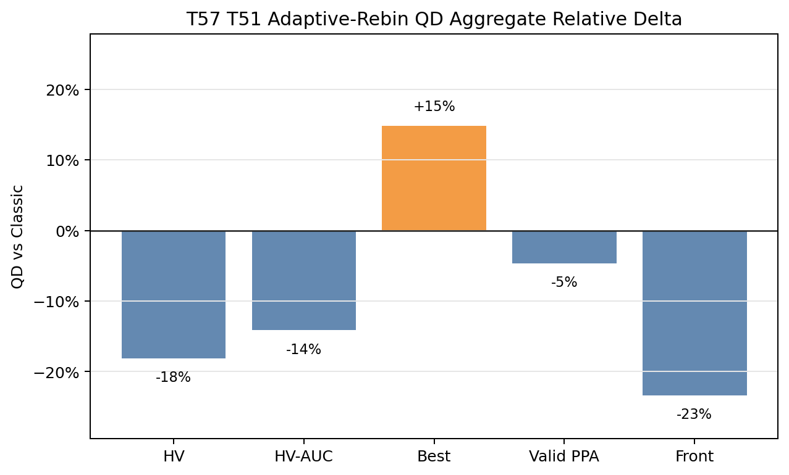
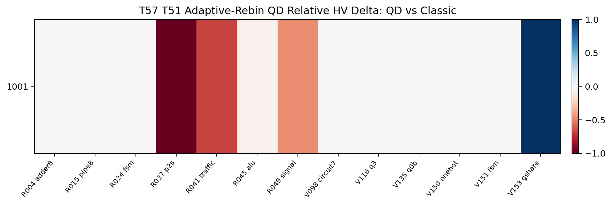
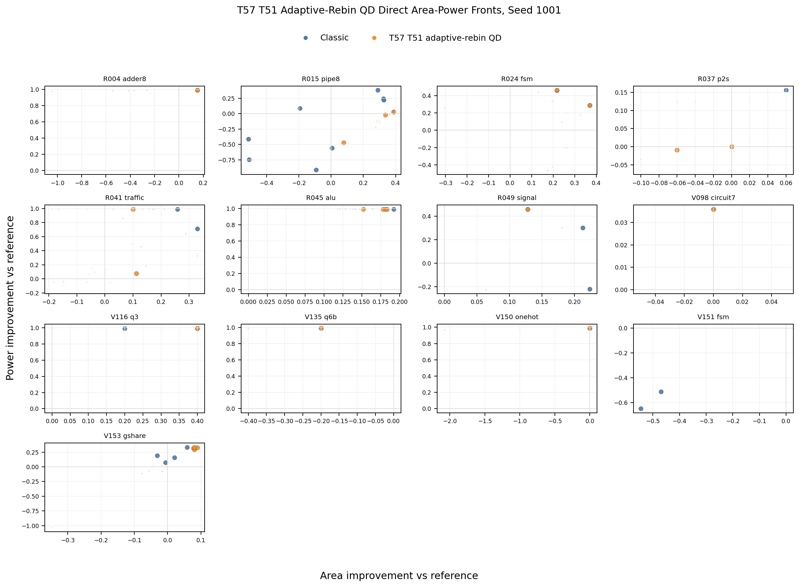
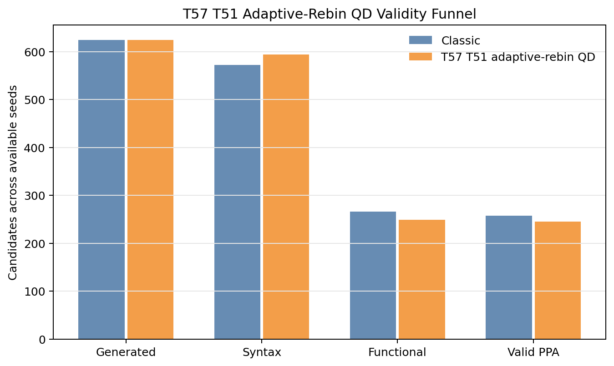
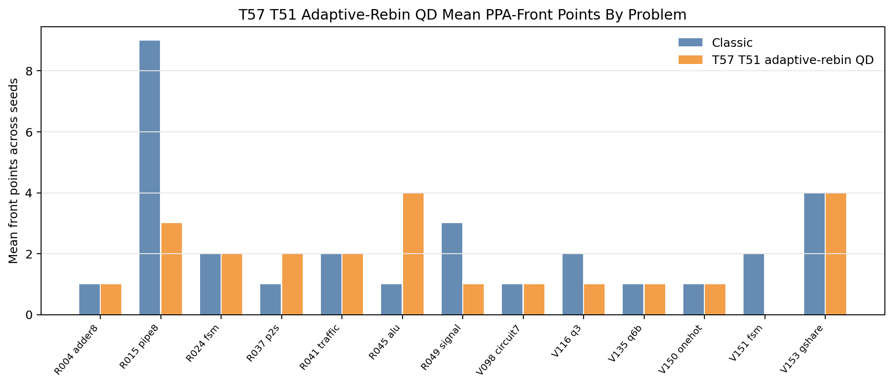
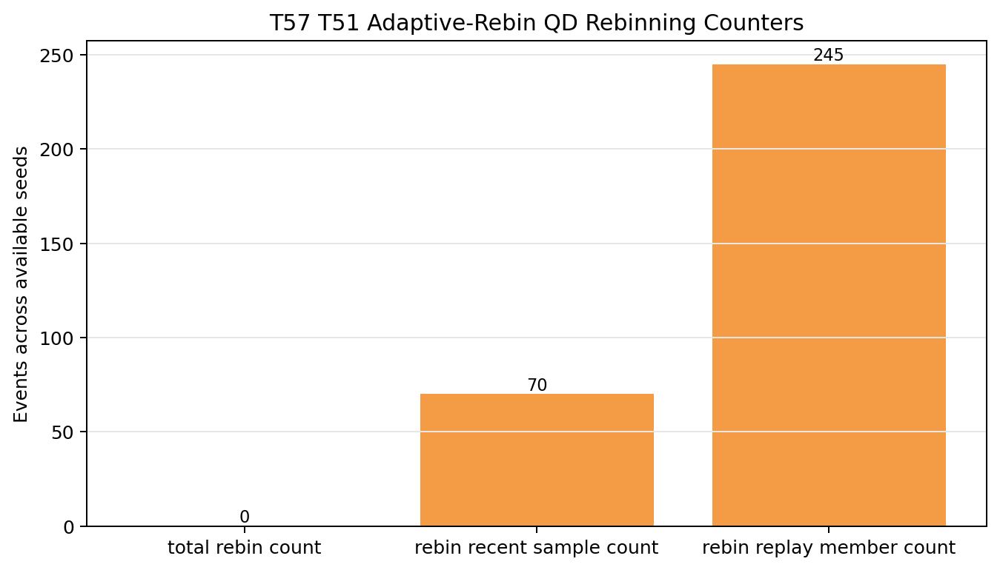

T57 Direct PPA Pareto Supplement
Static reader-facing figures for the completed 13-problem hard/tuning screen. T57 keeps T51 fixed and enables KS-triggered grid-quantile rebinning. The run produced rebin checks but no rebin events, and it does not beat classic on the primary PPA-front metrics.
-0.016790Mean HV delta
-0.011599Mean HV-AUC delta
+0.033800Best-score delta
-12Valid PPA
-7Front points
-7Reference beating
1Classic-covered losses
0Rebin events
Aggregate Direction

Paired HV Heatmap

Direct Area-Power Fronts

Validity, Front Coverage, And Rebin Counters


